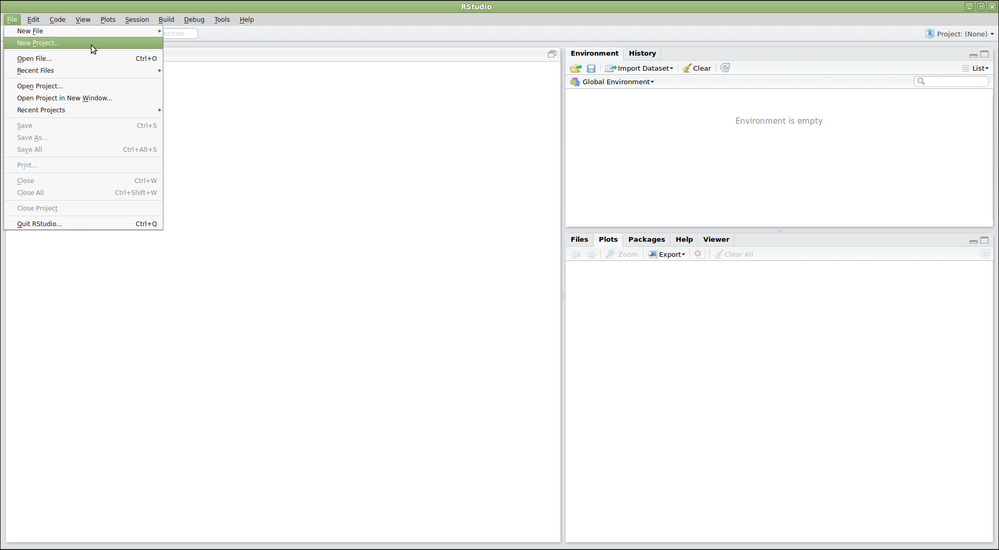

Supplemental: Using Git from RStudio
Overview
Teaching: 10 min
Exercises: 0 minQuestions
How can I use Git with RStudio?
Objectives
Understand how to use Git from RStudio.
Version control can be very useful when developing data analysis scripts. For that reason, the popular development environment RStudio for the R programming language has built-in integration with Git. While some advanced Git features still require the command-line, RStudio has a nice interface for many common Git operations.
RStudio allows us to create a project associated with a given directory to keep track of various related files. To be able to track the development of the project over time, to be able to revert to previous versions, and to collaborate with others, we version control the Rstudio project with Git. To get started using Git in RStudio, we create a new project:

This will open a dialog asking us how we want to create the project. We have some options here. Let’s say that we want to use RStudio with the planets repository that we already made. Since that repository lives in a directory on our computer, we choose the option “Existing Directory”:

Do You See a “Version Control” Option?
Although we’re not going to use it here, there should be a “version control” option on this menu. That is what you would click on if you wanted to create a project on your computer by cloning a repository from GitHub. If that option is not present, it probably means that RStudio doesn’t know where your Git executable is, and you won’t be able to progress further in this lesson until you tell RStudio where it is.
Find your Git Executiable
First let’s make sure that Git is installed on your computer. Open your shell on Mac or Linux, or on Windows open the command prompt and then type:
which git(Mac, Linux)where git(Windows)If there is no version of Git on your computer, please follow the Git installation instructions in the setup of this lesson to install Git now. Next open your shell or command prompt and type
which git(Mac, Linux), orwhere git(Windows). Copy the path to the git executable.e.g. On one Windows computer which had GitHub Desktop installed on it, the path was:
C:/Users/UserName/AppData/Local/GitHubDesktop/app-1.1.1/resources/app/git/cmd/git.exeNOTE: The path on your computer will be somewhat different.
Tell RStudio where to find GitHub
In RStudio, go to the
Toolsmenu >Global Options>Git/SVNand then browse to the git executable you found in the command prompt or shell. Now restart RStudio. Note: Even if you have Git installed, you may need to accept the XCode license if you are using macOS.
Next, RStudio will ask which existing directory we want to use. Click “Browse…” and navigate to the correct directory, then click “Create Project”:

Ta-da! We have created a new project in RStudio within the existing planets repository. Notice the vertical “Git” menu in the menu bar. RStudio has recognized that the current directory is a Git repository, and gives us a number of tools to use Git:

To edit the existing files in the repository, we can click on them in the “Files” panel on the lower right. Now let’s add some additional information about Pluto:

Once we have saved our edited files, we can use RStudio to commit the changes by clicking on “Commit…” in the Git menu:

This will open a dialogue where we can select which files to commit (by
checking the appropriate boxes in the “Staged” column), and enter a commit
message (in the upper right panel). The icons in the “Status” column indicate
the current status of each file. Clicking on a file shows information about
changes in the lower panel (using output of git diff). Once everything is the
way we want it, we click “Commit”:

The changes can be pushed by selecting “Push Branch” from the Git menu. There are also options to pull from the remote repository, and to view the commit history:

Are the Push/Pull Commands Grayed Out?
Grayed out Push/Pull commands generally mean that RStudio doesn’t know the location of your remote repository (e.g. on GitHub). To fix this, open a terminal to the repository and enter the command:
git push -u origin main. Then restart RStudio.
If we click on “History”, we can see a graphical version of what git log
would tell us:

RStudio creates a number of files that it uses to keep track of a project. We
often don’t want to track these, in which case we add them to our .gitignore
file:

Tip: versioning disposable output
Generally you do not want to version control disposable output (or read-only data). You should modify the
.gitignorefile to tell Git to ignore these files and directories.
Challenge
- Create a new directory within your project called
graphs.- Modify the
.gitignoreso that thegraphsdirectory is not version controlled.Solution to Challenge
This can be done in Rstudio:
dir.create("./graphs")Then open up the
.gitignorefile from the right-hand panel of Rstudio and addgraphs/to the list of files to ignore.
There are many more features in the RStudio Git menu, but these should be enough to get you started!
Key Points
Using RStudio’s Git integration allows you to version control a project over time.